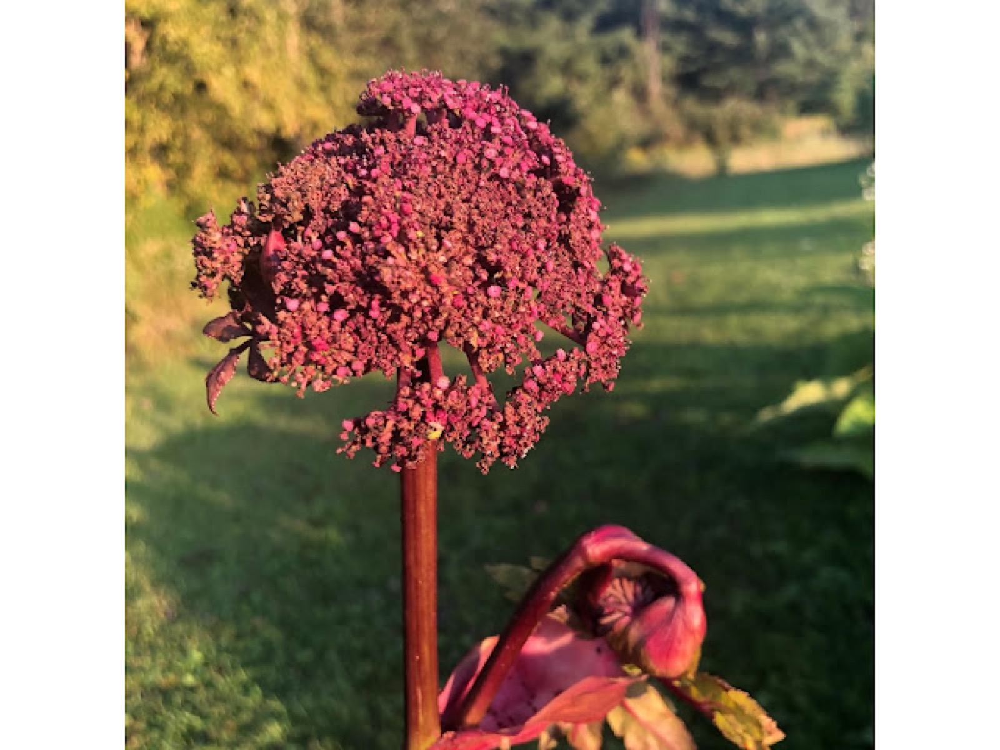
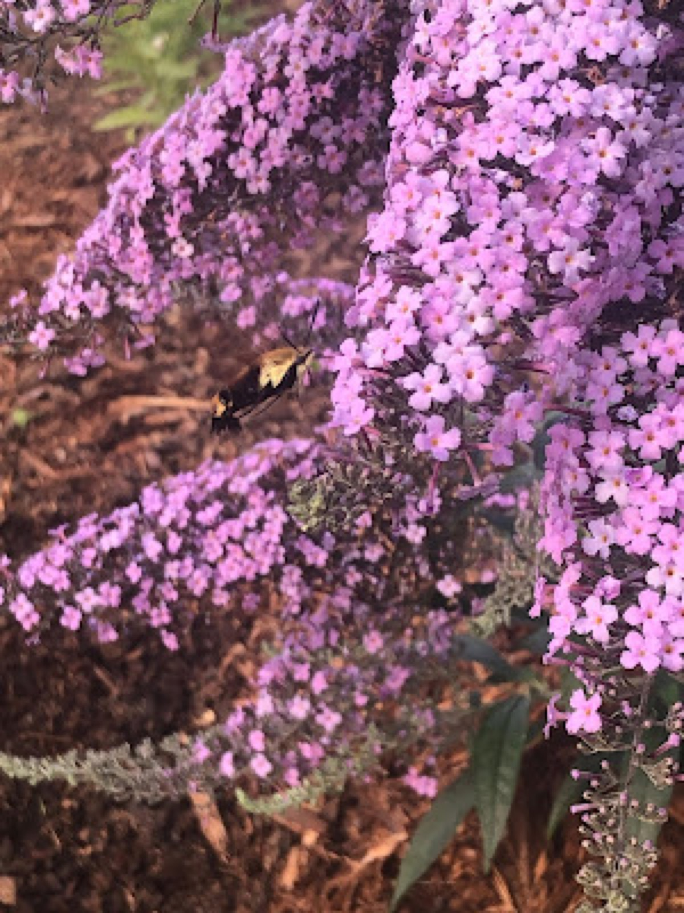
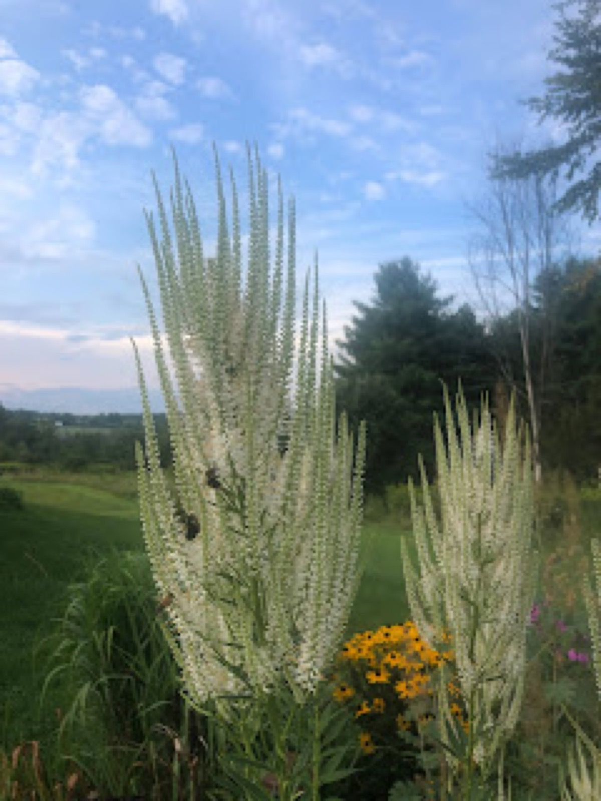
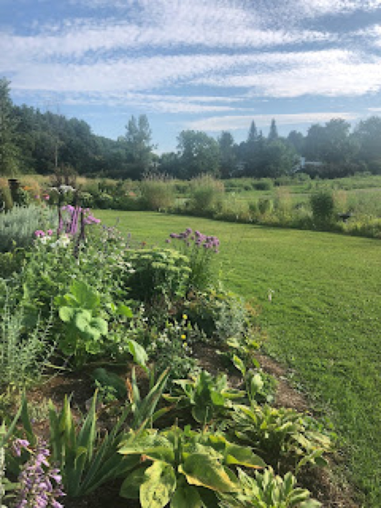
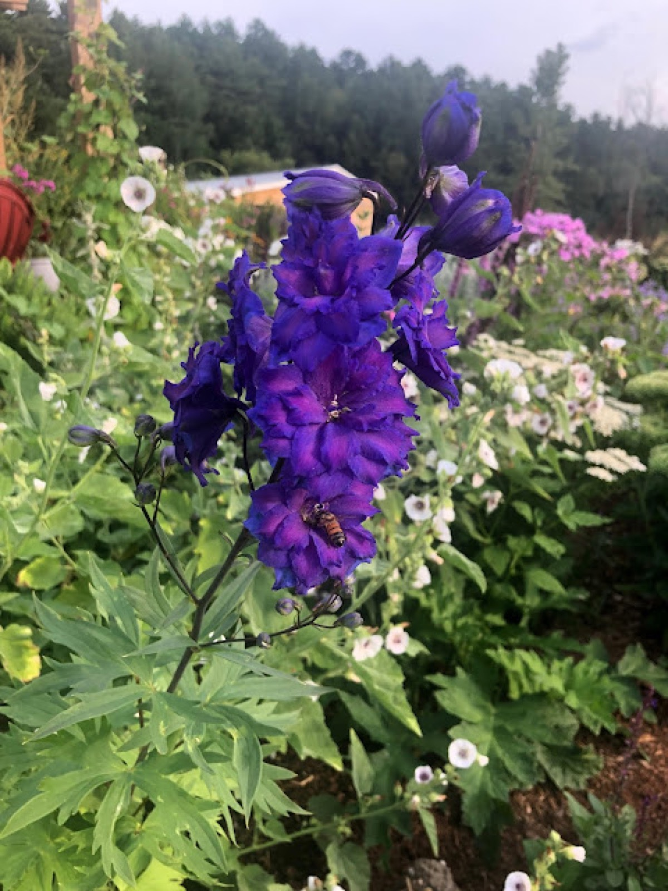

End of August 2019
Late August and Still Optimistic

The garden is still producing blooms and entices me to stop and smell the flowers. I’ve especially enjoyed the fragrance of Angelica gigas. This spicy, strange, and fragrant plant presents unique foliage in a naturalized garden space. Not everyone enjoys the oddity of this plant, for me, she stands tall with broad leaves and bold blooms in a unique dome that exists in no other part of the garden. I planted this lady behind false sunflower and near special spring blooms including Japanese iris and flower almond to present blooms at various times throughout the gardening season.
The butterfly bushes I planted earlier this year are presenting prolific blooms. I continue to deadhead, as I do with purple salvia, dead nettle, and bee balm. All of these flowers have generated new blooms that are helpful to life in the garden. The butterfly bushes have attracted the hummingbird moth. While the name suggests this is a hummingbird, it is not, rather this is a moth! Today I had the honor of seeing two feeding at the butterfly bushes- perhaps they are family! Unfortunately, I did not have my phone on hand to capture their image. Only one hummingbird moth paused for a photo opportunity.


I am particularly pleased how bumblebees have been drawn to culver’s root. These white candelabras present contrast to the warm colors found in the garden this season. I would like to expand the presence of this beauty in all areas of the garden. This is a fantastic plant for late summer interest in Vermont, its height and bright white color stands out this time of year. However, the beauty of this plant isn’t the primary reason behind including it in your plant catalog- you should plant it because culver’s root is endangered.
I’ll end this post by looking forward to next spring. I’ve begun the process of kill mulching a rather large section of our grass. My effort is to surround the house in gardens no matter the window one looks through. For the last installation of the season, I’m opting out of the painstaking process of digging up sod and dumping it in the wooded area of our grounds. As I laid down layers of cardboard, manure, and mulch I recognize the fragile life that depends on the wildflowers, native plants, and open space that our grounds provide. I hesitate to install new spaces, while acknowledging that planting is for the betterment of all, the space will be reserved for plants and will be enjoyed by wildlife of all shapes and sizes in the form of food and shelter.


Filed in the garden journal · End of August 2019